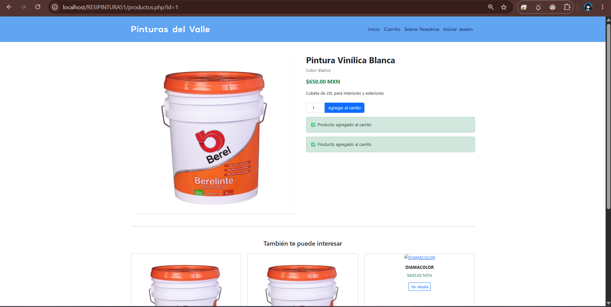
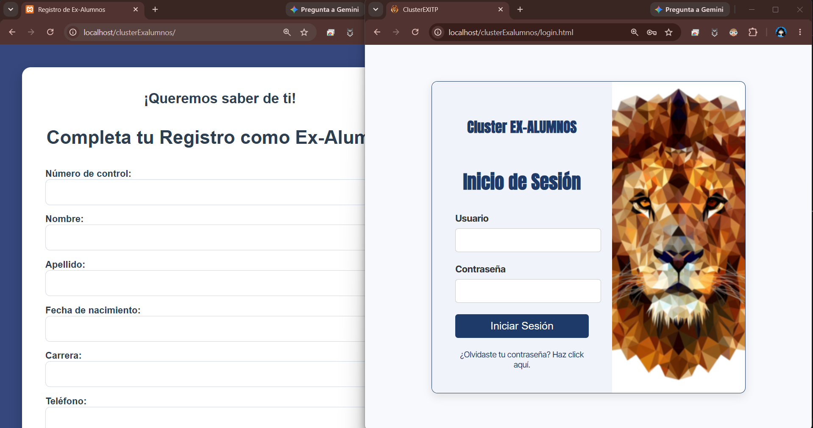
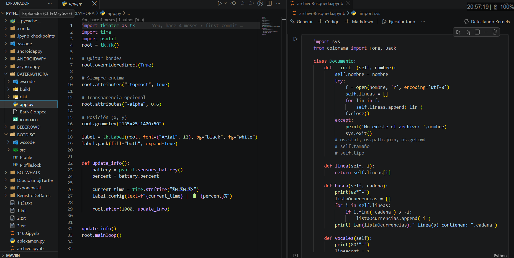
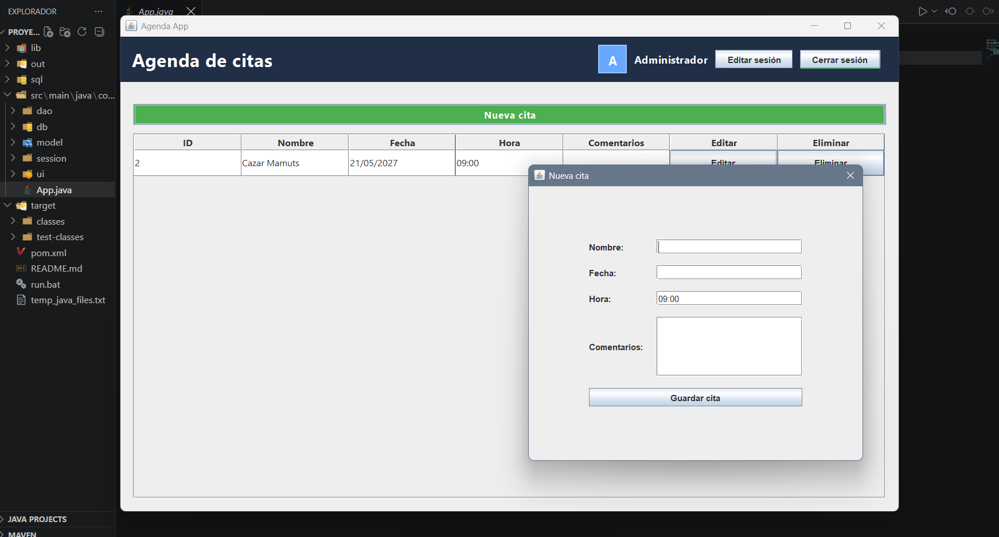

Tecnologías y proyectos
Me especializo en el desarrollo de páginas web dinámicas, sistemas pequeños, automatizaciones y mejora continua de experiencia de usuario. La programación es para mí una herramienta para resolver problemas reales y optimizar procesos.
PYTHON Y JAVA
Desarrollo con POO de soluciones en manejo de datos, cálculos o aplicaciones de escritorio o web con Flask
Desarrollo y mantenimiento de aplicaciones de escritorio o de android (java o kotlin), resolucion de problemas con aplicaciones java.
PÁGINAS WEB
Desarrollo de aplicaciones y paginas web estáticas y dinámicas, conexiones con bases de datos, control de usuarios, paneles de administrador, pasarelas de pago, etc.
SQL PL/SQL
Diseño e implementación de bases de datos relacionales, consultas y conexiones a sus aplicaciones asi como administración profesional.
ARDUINO / IOT
Desarrollé proyectos con el uso de ESP32 y Arduino UNO, incluyendo envio de datos de sensores a una base de datos
E-commerce con PHP + MySQL
Problema: Un negocio necesitaba una plataforma propia para vender en línea, con control de inventario y gestión segura de usuarios, en lugar de depender de plataformas externas.
Solución: Desarrollé una aplicación web completa con PHP y MySQL: autenticación de usuarios con verificación en dos pasos (2FA), catálogo de productos, carrito de compras y persistencia de la información en una base de datos relacional diseñada desde cero.
Resultado: Una plataforma funcional de comercio electrónico que tomó 9 meses de planifiacion y desarrollo.
Proyecto entregado a cliente — código no público por confidencialidad

Cluster de exalumnos para universidades
Problema: El Clúster de Educación necesitaba una forma centralizada de registrar y dar seguimiento a exalumnos de múltiples universidades del país con fines de investigación, un proceso que antes no tenía una herramienta unificada.
Solución: Como parte de mi Residencia Profesional en el ITP, desarrollé una aplicación web full stack para el registro y administración de esta información, incluyendo diseño de base de datos, operaciones CRUD y consumo de servicios vía API, documentando cada funcionalidad para su mantenimiento futuro.
Resultado: Una herramienta usada para consolidar información de exalumnos de varias universidades en un solo sistema.
Proyecto entregado a cliente — código no público por confidencialidad

Muchos programas PYTHON
Mi lenguaje de programación mas fuerte aunque no el único, desde conexiones SQL, interfaces gráficas, manejo de archivos, Flask, y mas cosas, con ese lenguaje

Programa de citas con JAVA + MySQL
Problema: Necesitaba una herramienta de escritorio para agendar, editar y eliminar citas con soporte para múltiples usuarios, sin depender de hojas de cálculo o procesos manuales.
Solución: Construí una aplicación de escritorio en Java conectada a una base de datos MySQL, con operaciones CRUD completas y manejo de múltiples usuarios de forma simultánea.
Resultado: Una aplicación funcional que demuestra manejo de POO, persistencia de datos y diseño de interfaces de escritorio.
Código en GitHub

Esos son algunos de los proyectos y aplicaciones que he desarrollado, al igual que he usado Arduino, Android Studio y en general tengo fuertes bases de programación, gusto y adaptabilidad para varias tecnologías que pudiera necesitar su equipo de trabajo.